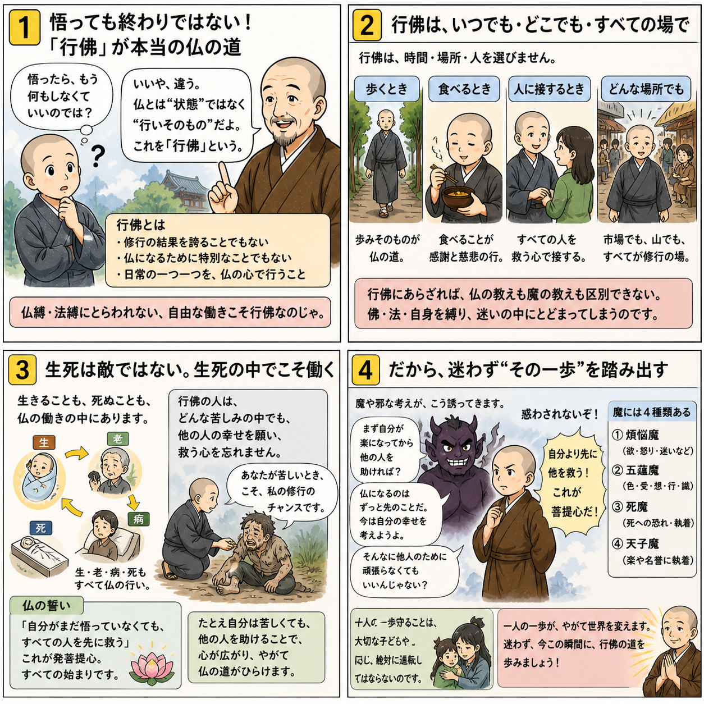

七十五巻 巻一覧
正法眼藏第6 行佛威儀
本紹介ページの導入・語彙・深掘り・クイズは tools/regen_volume_intro_from_corpus.py が OpenAI API で生成したものです（入力は当巻の原文からの短い抜粋のみ）。内容はモデル出力のため、重要箇所は必ず原文・教本と照合してください。
出典: https://shomonji.or.jp/zazen/doc/genzou.html
原文・現代語訳の全文は 全文ページを参照してください。
この巻の紹介（導入）
この巻では、行佛の威儀について述べられています。行佛は、ただの報佛や化佛、自性身佛や他性身佛ではなく、真の佛道における行いを指します。
行佛の威儀は、身前に現れ、道前に化機が漏れ出るものであり、これを通じて佛道を理解することが求められています。
語彙の足場
- 行佛：行佛とは、佛道を実践する行いを指し、単なる知識や概念に留まらず、実際の行動として現れるものを意味します。
- 威儀：威儀は、行動や態度における品位や威厳を指し、行佛においてはその行動が佛の教えを体現することを求められます。
- 菩提：菩提は、悟りを得ることを指し、佛教においては真理を理解し、解脱を目指す心の状態を表します。
- 無明：無明は、真理を理解しない状態を指し、佛教ではこの無明から解放されることが重要とされています。
- 法身：法身は、佛の本質を表す概念であり、すべての存在の根本的な真理を示します。
原文（要点の抜粋）
当巻の冒頭付近からの短い抜粋です。長い引用は載せていません。 全文は全文ページを参照してください。出典はリポジトリ内 doc/正法眼蔵.txt です。原文の参照元: https://shomonji.or.jp/zazen/doc/genzou.html
諸佛かならず威儀を行足す、これ行佛なり。行佛それ報佛にあらず、化佛にあらず、自性身佛にあらず、他性身佛にあらず。始覺本覺にあらず、性覺無覺にあらず。如是等佛、たえて行佛に齊肩することうべからず。
しるべし、諸佛の佛道にある、覺をまたざるなり。佛向上の道に行履を通達せること、唯行佛のみなり。自性佛等、夢也未見在なるところなり。この行佛は、頭頭に威儀現成するゆゑに、身前に威儀現成す、道前に化機漏泄すること、亙時なり、亙方なり、亙佛なり亙行なり。行佛にあらざれば、佛縛法縛いまだ解脱せず、佛魔法魔に黨類せらるるなり。
佛縛といふは、菩提を菩提と知見解會する、卽知見、卽解會に卽縛せられぬるなり。一念を經歴するに、なほいまだ解脱の期を期せず、いたづらに錯解す。菩提をすなはち菩提なりと見解せん、これ菩提相應の知見なるべし。たれかこれを邪見といはんと想憶す、これすなはち無繩自縛なり。縛縛綿綿として樹倒藤枯にあらず。いたづらに佛邊の窠窟に活計せるのみなり。法身のやまふをしらず、報身の窮をしらず。
教家經師論師等の佛道を遠聞せる、なほしいはく、卽於法性、起法性見、卽是無明（法性に卽して法性の見を起す、卽ち是れ無明なり）。この教家のいはくは、法性に法性の見おこるに、法性の縛をいはず、さらに無明の縛をかさぬ、法性の縛あることをしらず。あはれむべしといへども、無明縛のかさなれるをしれるは、發菩提心の種子となりぬべし。いま行佛、かつてかくのごとくの縛に縛せられざるなり。
かるがゆゑに我本行菩薩道、所成壽命、今猶未盡、復倍上數（我れ本より菩薩道を行じて、成る所の壽命、今なほ未だ盡きず、また上の數に倍せり）なり。
しるべし、菩薩の壽命いまに連綿とあるにあらず、佛壽命の過去に布遍せるにあらず。いまいふ上數は、全所成なり。いひきたる今猶は、全壽命なり。我本行たとひ萬里一條鐵なりとも、百年抛却任縱横なり。
しかあればすなはち、修證は無にあらず、修證は有にあらず、修證は染汚にあらず。無佛無人の處在に百千萬ありといへども、行佛を染汚せず。ゆゑに行佛の修證に染汚せられざるなり。修證の不染汚なるにはあらず、この不染汚、それ不無なり。
曹谿いはく、祗此不染汚、是諸佛之所護念、汝亦如是、吾亦如是、乃至西天諸祖亦如是（ただ此の不染汚、是れ諸佛の所護念なり、汝もまた是の如し、吾もまた是の如し、乃至西天の諸祖もまた是の如し）。
しかあればすなはち汝亦如是のゆゑに諸佛なり、吾亦如是のゆゑに諸佛なり。まことにわれにあらず、なんぢにあらず。この不染汚に、如吾是吾、諸佛所護念、これ行佛威儀なり。如汝是汝、諸佛所護念、これ行佛威儀なり。吾亦のゆゑに師勝なり、汝亦のゆゑに資強なり。師勝資強、これ行佛の明行足なり。しるべし、是諸佛之所護念と、吾亦なり、汝亦なり。曹谿古佛の道得、たとひわれにあらずとも、なんぢにあらざらんや。行佛之所護念、行佛之所通達、それかくのごとし。かるがゆゑにしりぬ、修證は性相本末等にあらず。行佛の去就これ果然として佛を行ぜしむるに、佛すなはち行ぜしむ。
ここに爲法捨身あり、爲身捨法あり。不惜身命あり、但惜身命あり。法のために法をすつるのみにあらず、心のために法をすつる威儀あり。捨は無量なること、わするべからず。佛量を拈來して大道を測量し度量すべからず。佛量は一隅なり、たとへば花開のごとし。心量を擧來して威儀を摸索すべからず、擬議すべからず。心量は一面なり、たとへば世界のごとし。一莖草量、あきらかに佛祖心量なり。これ行佛の蹤跡を認ぜる一片なり。一心量たとひ無量佛量を包含せりと見徹すとも、行佛の容止動靜を量せんと擬するには、もとより過量の面目あり。過量の行履なるがゆゑに、卽不中なり、使不得なり、量不及なり。
しばらく、行佛威儀に一究あり。卽佛卽自と恁麼來せるに、吾亦汝亦の威儀、それ唯我能にかかはれりといふとも、すなはち十方佛然の脱落、これ同條のみにあらず。かるがゆゑに、
古佛いはく、體取那邊事、却來這裏行履（那邊の事を體取し、這裏に却來して行履せよ）。
図解（4コマ・AI生成）
教義の根拠は原文・出典に従い、漫画は比喩の補助に留めてください。

深掘り（読解の手掛かり）
- 行佛は、ただの知識や理論ではなく、実際の行動として現れることが重要である。
- 威儀は、行動の中に現れる佛の教えを体現するものであり、修行者に求められる。
- 菩提を理解することは、行佛の実践において不可欠であり、無明からの解放が求められる。
- 行佛の実践は、身心を通じて行われ、他者との関係性の中でその威儀が現れる。
確認（形成評価）
各設問の下の「採点」で正誤を表示します（ブラウザ内のみ。ログは送りません）。